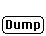

The .i.Load/Dump Dialog box; is used to transfer data between the Default
values and the Current window values.
This button is used to activate the dialog box when
information from Crystals, Beams or Orientation Relationships located within
other objects in the program are to be loaded into the current crystal definitions.
.i.Load;.i.Crystal:Crystal Definition:Load;
This button is used to activate the dialog box when
the information from the current Crystals, Beams or Orientation Relationships
are to be dumped into a different object..i.Dump;.i.Crystal:Crystal Definition:Dump;
This button simply returns the user to the current dialog
box, it does not return the program to its previous state.
I. CAUTION: Any actions taken while in the Load/Dump dialog box are irreversible.